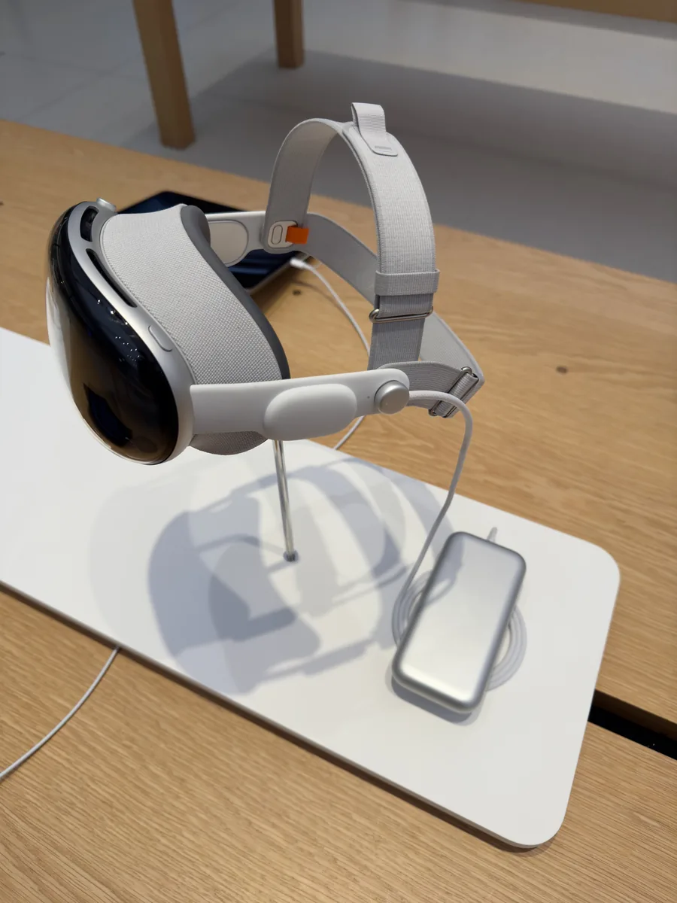

Era atual e tendências emergentes
2020 – hoje · do ChatGPT aos agentes de IA
A internet deixou de ser um meio para acessar sites e virou infraestrutura integrada ao cotidiano. Inteligência artificial, nuvem, edge computing, realidade aumentada, redes 5G e automação passaram a operar em conjunto.

A IA generativa e os grandes modelos de linguagem, que produzem texto, imagem, som e código a partir de instruções em linguagem natural. Junto vêm os agentes de IA, que planejam e executam tarefas; a computação espacial, com o Apple Vision Pro apresentado em 2023; a Web3 com blockchain, NFTs e DAOs; o edge computing; e a computação quântica, ainda inicial.
A forma de operar um computador mudou de novo: em vez de aprender comandos, o usuário descreve o que quer. Junto vêm os problemas — deepfakes, desinformação, golpes, direitos autorais e privacidade —, além do uso de IA generativa por grupos criminosos para automatizar engenharia social.
- 2022
- Lançamento do ChatGPT em 30 de novembro, popularizando a IA generativa.
- 2023
- Explosão de ferramentas de IA generativa e apresentação do Apple Vision Pro.
- 2024
- Expansão de IA e realidade mista; primeiros padrões de criptografia pós-quântica publicados pelo NIST em agosto.
- 2025
- Avanço de agentes de IA, IA multimodal e preparação para a computação pós-quântica.
- 2026
- IA cada vez mais integrada a sistemas e serviços; avanço da preparação técnica do 6G.
Diferente das fases anteriores, aqui não há um nome só: o feito é coletivo. As equipes por trás dos grandes modelos de linguagem tornaram essa tecnologia pública a partir do lançamento do ChatGPT, em 30 de novembro de 2022 — por isso esta fase não traz galeria de retratos.
Ensine a máquina
Escolha duas categorias, desenhe cinco exemplos de cada uma e veja o modelo aprender de verdade com os seus traços — sem rede neural, só matemática de pixels.
Ensine as duas categorias
Agora desenhe um sexto aqui no mesmo quadro — pode ser parecido com as categorias, ou bem diferente das duas — e clique em "O que é isso?".
O modelo só conhece as duas categorias que você ensinou. Qualquer desenho vira uma das duas — mesmo que não pareça com nenhuma das duas. Ele não tem como responder "não sei": foi assim que aprendeu, e é assim que qualquer classificador treinado por exemplos se comporta.
- OpenAI — anúncio oficial do GPT-4o (13 de maio de 2024), modelo que gera texto, imagem, áudio e código a partir de instruções em linguagem natural.
- Anthropic — "Building Effective Agents" (blog de engenharia, dezembro de 2024), sobre agentes de IA que planejam e executam tarefas em várias etapas.
- Apple Newsroom — comunicado oficial "Introducing Apple Vision Pro" (5 de junho de 2023), sobre o lançamento do dispositivo de computação espacial.
- Europol (Innovation Lab) — relatório "ChatGPT: The Impact of Large Language Models on Law Enforcement" (27 de março de 2023) e FBI / Internet Crime Complaint Center — alerta público "Criminals Use Generative Artificial Intelligence to Facilitate Financial Fraud" (3 de dezembro de 2024): dois órgãos oficiais independentes documentando o uso de IA generativa por grupos criminosos para golpes e engenharia social.
- Gavin Wood — cunhou o termo "Web3" em 2014, com a ideia de uma internet descentralizada baseada em blockchain; confirmado pelo próprio em entrevista à CNBC ("What is Web3? Gavin Wood who invented the word gives his vision", abril de 2022) e em seu texto original "Why We Need Web 3.0" (blog pessoal, 2014). Dentro do Web3, os NFTs foram formalizados pelo padrão técnico ERC-721 na Ethereum (proposta de 24 de janeiro de 2018, por William Entriken, Dieter Shirley, Jacob Evans e Nastassia Sachs), documentado no repositório oficial de padrões eips.ethereum.org (EIP-721) e na documentação da Ethereum Foundation em ethereum.org.
- Google Research — artigo "Quantum Supremacy Using a Programmable Superconducting Processor" (blog oficial, outubro de 2019) e Arute et al., "Quantum supremacy using a programmable superconducting processor", Nature, vol. 574 (2019), artigo revisado por pares: o processador Sycamore, de 53 qubits, executou em cerca de 200 segundos uma tarefa estimada em milhares de anos para um supercomputador clássico — o marco mais citado do estágio ainda inicial e experimental da computação quântica.
- Satyanarayanan, Bahl, Caceres e Davies — "The Case for VM-Based Cloudlets in Mobile Computing", IEEE Pervasive Computing (2009), artigo seminal da Carnegie Mellon University que propôs os "cloudlets" (processamento próximo ao dispositivo), origem acadêmica do que hoje se chama edge computing; e Satyanarayanan, "How we created edge computing", Nature Electronics (2018), retrospectiva revisada por pares sobre a evolução do conceito. Como "edge computing" é mais um paradigma de arquitetura do que uma invenção pontual, essas duas publicações acadêmicas independentes servem como lastro para sua menção na página.
- A data do lançamento público do ChatGPT (30 de novembro de 2022) é amplamente documentada e consta do anúncio oficial da OpenAI.
-
O classificador desta página é um algoritmo de vizinho mais
próximo do centroide sobre pixels — o código comentado está em
fases/08-ia-generativa/classificador.js, para quem quiser ver exatamente como ele decide.